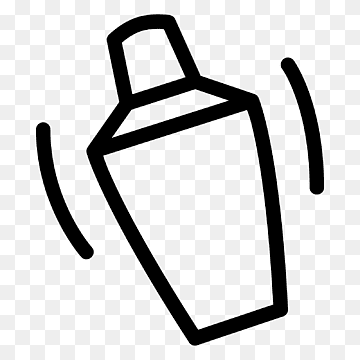

Short Cocktails 
Short drink has a volume of up to 100 ml. Drinks of this type are
stronger than long drinks because the ingredients consist of strong
alcohol, and we prepare them without diluting ingredients. We add a
small amount of non-alcoholic substances to the glass. A short drink is
served in a cocktail glass.
Rusty Nail
The Rusty Nail cocktail is a classic mix of Drambuie and Scotch
whisky, commonly served “on the rocks” in an Old Fashioned glass. Due
to just being two spirits, the Rusty Nail is very strong and isn’t to
everyone’s taste. This cocktail is the drink of choice for fictional
character Saul Goodman, known from the popular TV series Breaking Bad
and Netflix original Better Call Saul.
What do you need to make the Rusty Nail?
For the drink
- 75 ml Scotch whisky
- 25 ml Drambuie
- Ice cubes
For the garnish
How to make it?
-
Fill an old fashioned glass with ice and add the Scotch whisky and
Drambuie.
- Gently stir and serve with a lemon twist to garnish.